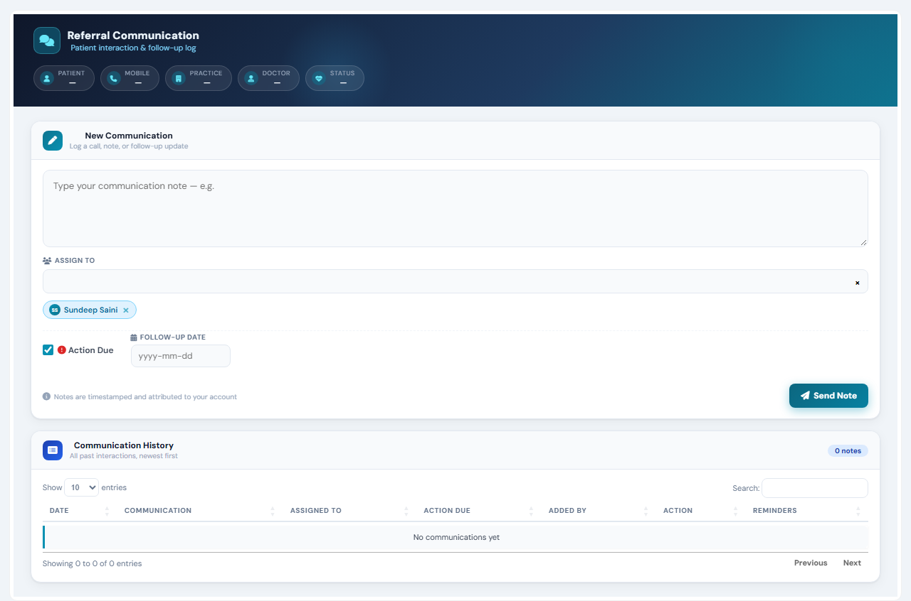

Total18
App defect4
Skipped6
Passed8
App defect The app did not do what its own validators/code say it should. Investigate the application.
Skipped Not executed.
Generation notes
- Rejected suggestion: "Verify 'Action Due' checkbox initial state" - scenario has no steps; (model was asked to fix this; see accepted scenarios for its replacement)
- Rejected suggestion: "Verify 'Action Due' checkbox initial state" - scenario has no steps
- Rejected suggestion: "Positive scenario: Valid follow-up date" - step 2: 'followUpDateProxy' is disabled/read-only; (model was asked to fix this; see accepted scenarios for its replacement)
- Rejected suggestion: "Negative scenario: Invalid date format" - step 2: 'followUpDateProxy' is disabled/read-only; (model was asked to fix this; see accepted scenarios for its replacement)
- Rejected suggestion: "Boundary scenario: Empty follow-up date" - step 2: 'followUpDateProxy' is disabled/read-only; (model was asked to fix this; see accepted scenarios for its replacement)
- Rejected suggestion: "Boundary scenario: Maximum length date" - step 2: 'followUpDateProxy' is disabled/read-only; (model was asked to fix this; see accepted scenarios for its replacement)
- TC_RCL_013: no provable expected result - runs as a smoke test (no crash / server error)
- TC_RCL_018: dropped ungrounded expectation: message 'Please assign a user when follow-up date is set.' does not appear in the page's code
- TC_RCL_018: no provable expected result - runs as a smoke test (no crash / server error)
| ID | Scenario | Result | Reason | Time |
|---|---|---|---|---|
TC_RCL_002 | Submit empty communication note negative | App defect | Expected the message 'Please Write Communication' but it never appeared. | 6.37s |
Expected: message 'Please Write Communication' appears; no server error Why this is expected: code_behind_handlers shows error message on empty input Steps:
test_library/epr_referralcommunicationlogs/20261031_120608_full_page/test_epr_referralcommunicationlogs_20261031_120608.py::test_TC_RCL_002[chromium]  | ||||
TC_RCL_012 | Check required field validation for communication note negative | App defect | Expected the message 'Please Write Communication' but it never appeared. | 6.33s |
Expected: message 'Please Write Communication' appears; no server error Why this is expected: message_shown proves validation error Steps:
test_library/epr_referralcommunicationlogs/20261031_120608_full_page/test_epr_referralcommunicationlogs_20261031_120608.py::test_TC_RCL_012[chromium]  | ||||
TC_RCL_015 | Negative scenario: Missing communication note negative | App defect | Expected the message 'Please Write Communication' but it never appeared. | 6.3s |
Expected: message 'Please Write Communication' appears; no server error Why this is expected: btnSaveAjax handler shows error message Steps:
test_library/epr_referralcommunicationlogs/20261031_120608_full_page/test_epr_referralcommunicationlogs_20261031_120608.py::test_TC_RCL_015[chromium]  | ||||
TC_RCL_017 | UI scenario: Assign user without follow-up date ui | App defect | Expected the message 'Submitted successfully!' but it never appeared. | 7.25s |
Expected: message 'Submitted successfully!' appears; no server error Why this is expected: client_script_validation shows message Steps:
test_library/epr_referralcommunicationlogs/20261031_120608_full_page/test_epr_referralcommunicationlogs_20261031_120608.py::test_TC_RCL_017[chromium] | ||||
TC_RCL_001 | Submit valid communication note positive · writes data | Skipped | Saves data - skipped because saving data was not allowed for this run | 0.0s |
Expected: message 'Submitted successfully!' appears; no server error Why this is expected: code_behind_handlers shows success message on valid input Steps:
test_library/epr_referralcommunicationlogs/20261031_120608_full_page/test_epr_referralcommunicationlogs_20261031_120608.py::test_TC_RCL_001[chromium] | ||||
TC_RCL_003 | Submit communication note with maximum length boundary · writes data | Skipped | Saves data - skipped because saving data was not allowed for this run | 0.0s |
Expected: message 'Submitted successfully!' appears; no server error Why this is expected: code_behind_handlers shows success message on valid input Steps:
test_library/epr_referralcommunicationlogs/20261031_120608_full_page/test_epr_referralcommunicationlogs_20261031_120608.py::test_TC_RCL_003[chromium] | ||||
TC_RCL_004 | Submit communication note with special characters positive · writes data | Skipped | Saves data - skipped because saving data was not allowed for this run | 0.0s |
Expected: message 'Submitted successfully!' appears; no server error Why this is expected: code_behind_handlers shows success message on valid input Steps:
test_library/epr_referralcommunicationlogs/20261031_120608_full_page/test_epr_referralcommunicationlogs_20261031_120608.py::test_TC_RCL_004[chromium] | ||||
TC_RCL_011 | Submit communication with valid data positive · writes data | Skipped | Saves data - skipped because saving data was not allowed for this run | 0.0s |
Expected: message 'Submitted successfully!' appears; no server error Why this is expected: message_shown proves successful submission Steps:
test_library/epr_referralcommunicationlogs/20261031_120608_full_page/test_epr_referralcommunicationlogs_20261031_120608.py::test_TC_RCL_011[chromium] | ||||
TC_RCL_014 | Positive scenario: Valid communication and assignment positive · writes data | Skipped | Saves data - skipped because saving data was not allowed for this run | 0.0s |
Expected: message 'Submitted successfully!' appears; no server error Why this is expected: btnSaveAjax handler shows success message Steps:
test_library/epr_referralcommunicationlogs/20261031_120608_full_page/test_epr_referralcommunicationlogs_20261031_120608.py::test_TC_RCL_014[chromium] | ||||
TC_RCL_016 | Boundary scenario: Maximum length communication note boundary · writes data | Skipped | Saves data - skipped because saving data was not allowed for this run | 0.0s |
Expected: message 'Submitted successfully!' appears; no server error Why this is expected: btnSaveAjax handler shows success message Steps:
test_library/epr_referralcommunicationlogs/20261031_120608_full_page/test_epr_referralcommunicationlogs_20261031_120608.py::test_TC_RCL_016[chromium] | ||||
TC_RCL_005 | Select a valid option from 'ASSIGN TO' positive | Passed | — | 1.72s |
Expected: 'ASSIGN TO' = 'Sundeep Saini'; no server error Why this is expected: ddlPendingStatus options Steps:
test_library/epr_referralcommunicationlogs/20261031_120608_full_page/test_epr_referralcommunicationlogs_20261031_120608.py::test_TC_RCL_005[chromium] | ||||
TC_RCL_006 | Select another valid option from 'ASSIGN TO' positive | Passed | — | 0.99s |
Expected: 'ASSIGN TO' = 'Dr Sunita Rani Cheif Medical Officer'; no server error Why this is expected: ddlPendingStatus options Steps:
test_library/epr_referralcommunicationlogs/20261031_120608_full_page/test_epr_referralcommunicationlogs_20261031_120608.py::test_TC_RCL_006[chromium] | ||||
TC_RCL_007 | Boundary test: Select the last option from 'ASSIGN TO' boundary | Passed | — | 1.0s |
Expected: 'ASSIGN TO' = 'Bhawna nagpal PHARMACY EXCECUTIVE'; no server error Why this is expected: ddlPendingStatus options Steps:
test_library/epr_referralcommunicationlogs/20261031_120608_full_page/test_epr_referralcommunicationlogs_20261031_120608.py::test_TC_RCL_007[chromium] | ||||
TC_RCL_008 | Boundary test: Select the first option from 'ASSIGN TO' boundary | Passed | — | 1.12s |
Expected: 'ASSIGN TO' = 'Sundeep Saini'; no server error Why this is expected: ddlPendingStatus options Steps:
test_library/epr_referralcommunicationlogs/20261031_120608_full_page/test_epr_referralcommunicationlogs_20261031_120608.py::test_TC_RCL_008[chromium] | ||||
TC_RCL_009 | Check 'Action Due' checkbox positive | Passed | — | 1.38s |
Expected: 'Action Due' is ticked; no server error Why this is expected: element_value proves checkbox can be checked Steps:
test_library/epr_referralcommunicationlogs/20261031_120608_full_page/test_epr_referralcommunicationlogs_20261031_120608.py::test_TC_RCL_009[chromium] | ||||
TC_RCL_010 | Uncheck 'Action Due' checkbox positive | Passed | — | 0.94s |
Expected: 'Action Due' is unticked; no server error Why this is expected: element_value proves checkbox can be unchecked Steps:
test_library/epr_referralcommunicationlogs/20261031_120608_full_page/test_epr_referralcommunicationlogs_20261031_120608.py::test_TC_RCL_010[chromium] | ||||
TC_RCL_013 | Boundary test for communication note length smoke | Passed | — | 0.57s |
Expected: no server error Why this is expected: no_server_error proves handling of long input Steps:
test_library/epr_referralcommunicationlogs/20261031_120608_full_page/test_epr_referralcommunicationlogs_20261031_120608.py::test_TC_RCL_013[chromium] | ||||
TC_RCL_018 | Boundary scenario: No user assigned with follow-up date smoke | Passed | — | 1.43s |
Expected: no server error Why this is expected: client_script_validation shows message Steps:
test_library/epr_referralcommunicationlogs/20261031_120608_full_page/test_epr_referralcommunicationlogs_20261031_120608.py::test_TC_RCL_018[chromium] | ||||